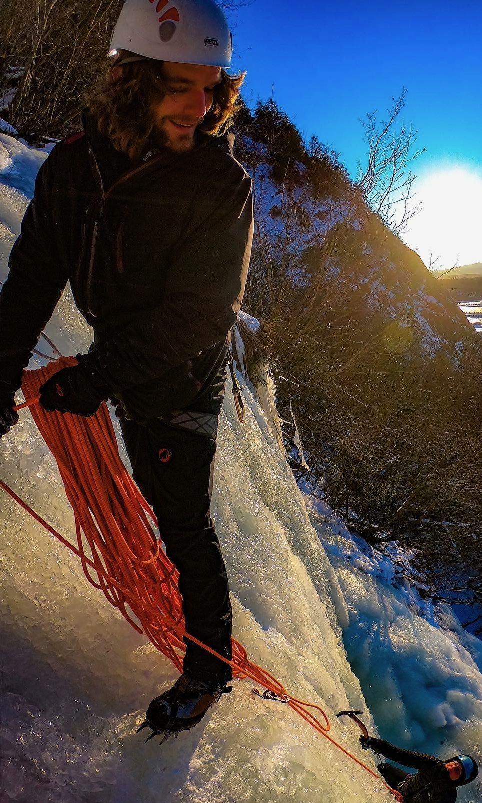

About Me

I am a database developer/geologist and statistician on the side with 12 years of experience across Alaska. This has provided me with firsthand experience in greenstone gold, VMS, skarn, ultramafic layered intrusions, and porphyry deposits. In 2025 I completed my MSc in Statistics at the University of Alaska Fairbanks where I focused on adapting process convolution models to spatial domains with sparse data.
Current Work
Apart from my work with MDF, I am involved in development of hierarchal regional scale targeting models using public domain geochemical and geophysical data. My personal interests are in creating target models that identify regions with high potential for geochemical anomalies and also classify those anomalies based on how prospective they are to becoming a mineable resource.